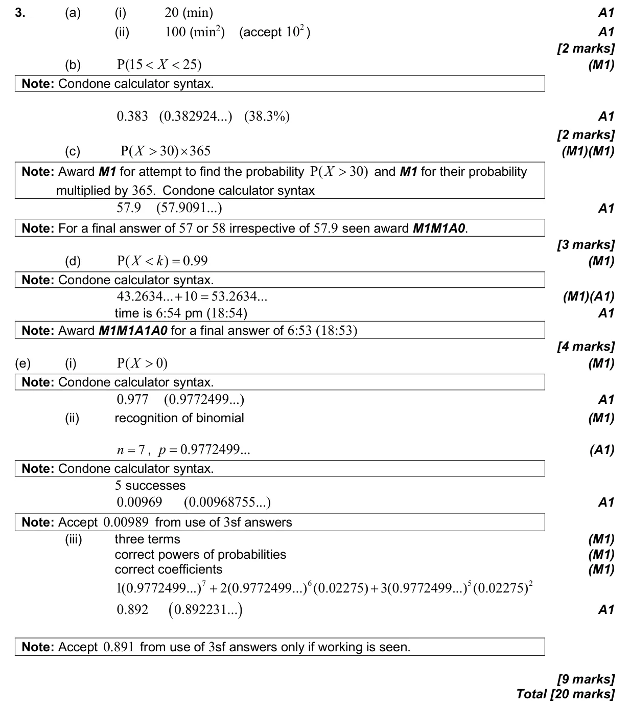

20 marks P2 TZ2 Calculator 4.9 Normal distribution and calculations4.6 Combined, mutually exclusive, conditional, independence and probability diagrams4.8 Binomial distribution4.5 Probability concepts and expected numbers Question Hide breakdown abcde Markscheme 